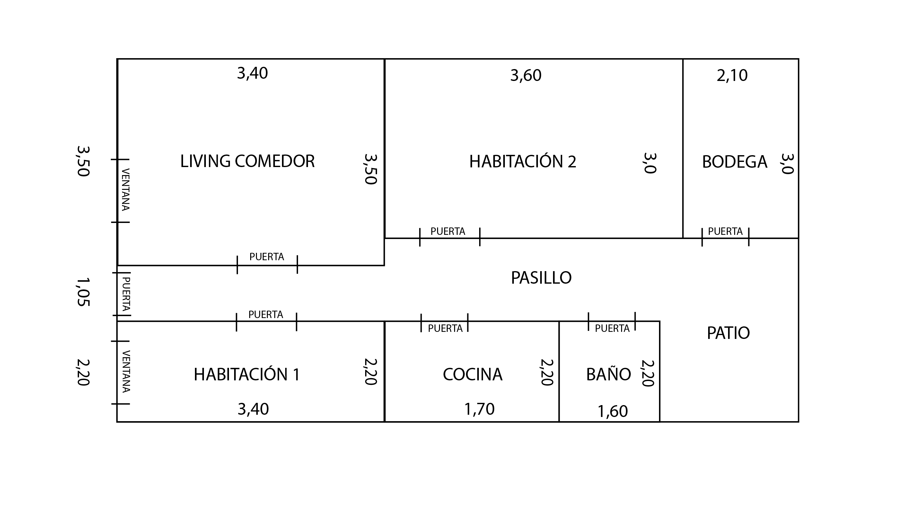
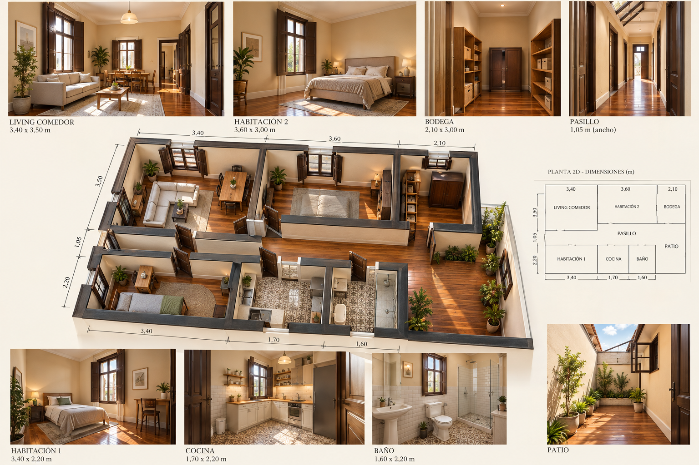
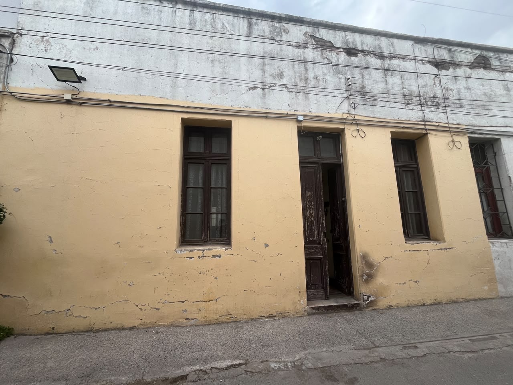
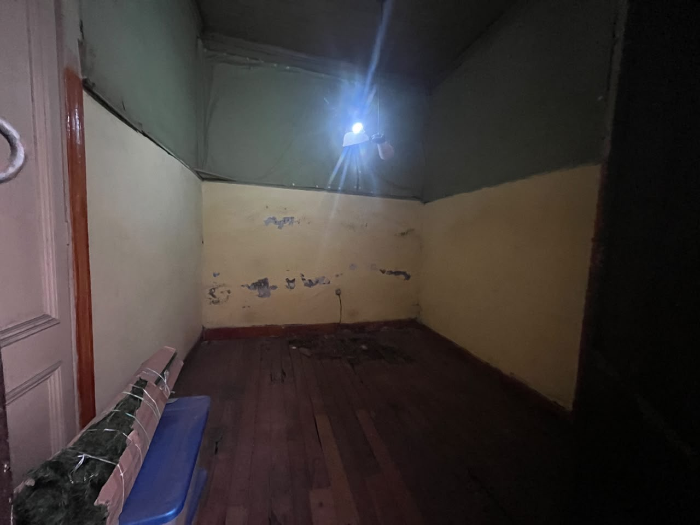
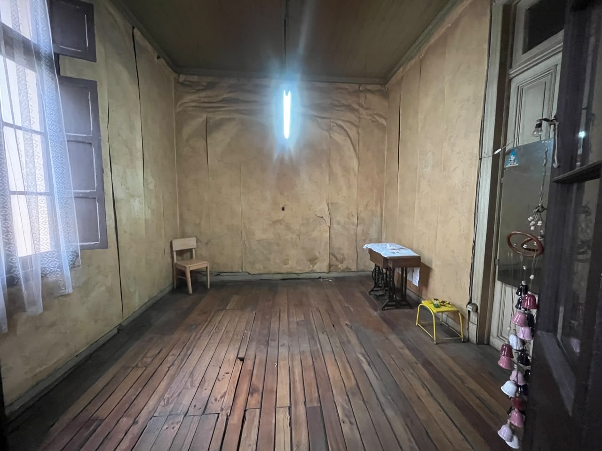
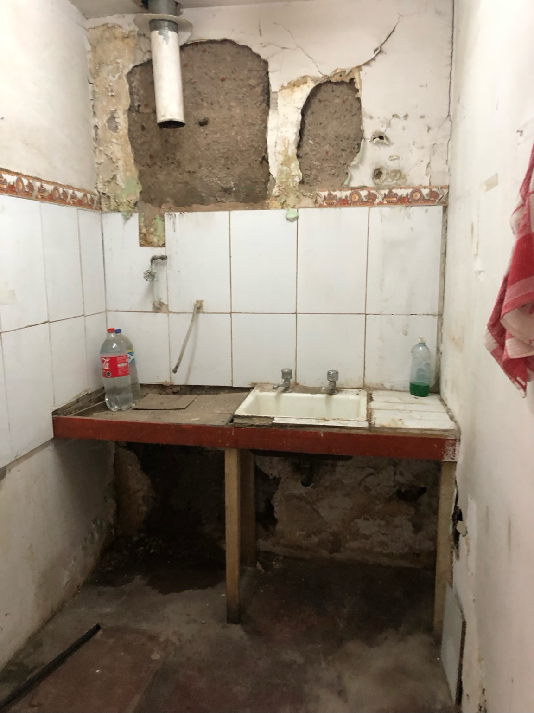

Planta 2D suministrada
Se reemplazó el esquema anterior por el plano acotado entregado. Las dimensiones se toman como antecedentes del mandante y deben verificarse en terreno antes de cubicaciones definitivas.

Galería arquitectónica
La visualización general de la remodelación se presenta a ancho completo. Debajo se incorpora el registro fotográfico disponible del estado actual, sin recortes y sin repetir archivos. Haz clic sobre cualquier fotografía para verla completa.

Registro fotográfico · estado actual


Fachada · estado actual

Recinto interior · estado actual Habitación · estado actual
Habitación · estado actual Pasillo cubierto · estado actual
Pasillo cubierto · estado actual Baño · estado actual
Baño · estado actual Patio · estado actual
Patio · estado actual Cocina · estado actual
Cocina · estado actual Bodega · estado actual
Bodega · estado actual

Living comedor · estado actual

Cocina · detalle de deterioroSecuencia profesional de obra
Levantamiento y diagnóstico
Replanteo de cotas; registro fotográfico; verificación de niveles, desplomes, humedad y estado de entramados. Se revisan tablero, circuitos, cañerías, descargas y ventilaciones. Cualquier muro a intervenir se clasifica antes como estructural/no estructural.
Control: plano conforme a obra + matriz de patologías + cubicación.Faenas previas y desmontajes
Protección de carpinterías recuperables; retiro selectivo de artefactos, cerámicas, revestimientos sueltos y redes fuera de servicio. No se demuelen elementos resistentes sin proyecto y autorización técnica.
Control: segregación de residuos y soporte firme antes de reconstruir.Pisos de madera
Numerar tablas sueltas, revisar envigado, reemplazar piezas incompatibles, fijar mecánicamente, retapar y lijar por secuencia de granos. Aspirar completamente; aplicar sellador compatible y 2–3 manos de vitrificante según ficha técnica, respetando tiempos de secado.
Resultado: superficie continua, lavable y reparable.Muros y cielos
Eliminar material disgregado hasta soporte sano. Resolver primero la fuente de humedad. Reponer estuco/yeso compatible, sellar fisuras no estructurales, empastar, lijar, imprimar y terminar con esmalte al agua lavable en tonos cálidos claros.
Control: humedad estabilizada antes de pintar.Electricidad
Revisión por instalador autorizado SEC: tablero, diferenciales, puesta a tierra, secciones de conductores, canalizaciones y circuitos separados para cocina/consumos mayores. Añadir suficientes enchufes para operación hotelera evitando extensiones permanentes.
Control: pruebas y documentación aplicable.Sanitaria, cocina y baño
Prueba de redes; sustitución de tramos defectuosos; llaves de corte accesibles; pendientes correctas; impermeabilización continua en ducha y encuentros; prueba de estanqueidad antes de revestir. Instalar cerámica/porcelanato con adhesivo compatible con el sustrato.
Carpinterías y terminaciones
Decapar sólo donde sea necesario, reparar ensambles, controlar plagas xilófagas si aparecen, lijar, sellar y terminar. Mantener puertas y ventanas oscuras como elemento identitario. Herrajes y cerraduras deben soportar alto tráfico.
Recepción y puesta en servicio
Checklist por recinto, pruebas de agua y electricidad, siliconas, sellos, retoques, limpieza fina, inventario y manual de mantención. Para uso de alojamiento se debe validar previamente compatibilidad normativa, permisos y condiciones de seguridad.
Especificación recomendada
Pisos secos
Conservar madera existente cuando sea técnicamente recuperable. Retape compatible + sellador + vitrificante poliuretánico al agua o sistema equivalente para alto tránsito.
Muros
Reparación mineral compatible; imprimante donde corresponda; esmalte al agua lavable, mate/satinado, cálido y luminoso. Evitar encapsular humedad activa.
Zonas húmedas
Impermeabilización bajo revestimiento, porcelanato/cerámica de fácil reposición, fragüe apropiado y sellos sanitarios en encuentros.
Visualización conceptual 3D: no constituye plano de construcción ni reemplaza el levantamiento definitivo.